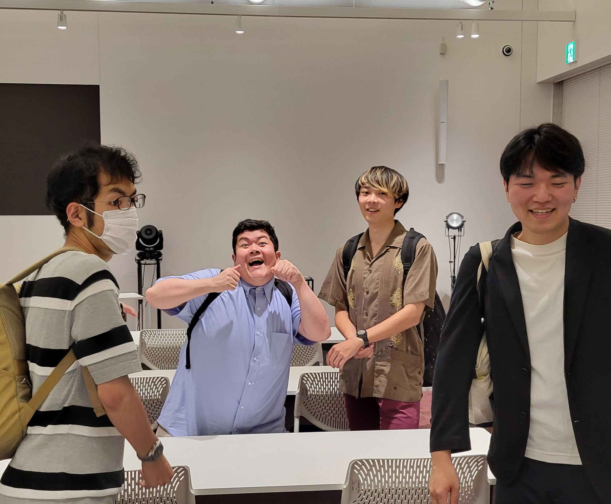

地域連携サークル交流会に参加しました
 今回の地域連携サークル交流会ではEDTCを含む４つのサークルと二つの研究室が参加しました。
今回の地域連携サークル交流会ではEDTCを含む４つのサークルと二つの研究室が参加しました。
各サークルや研究室が普段の活動について発表しました。
弊サークルからは１０人も参加させていただき代表で三年の恩田先輩が発表を行ってくださいました。
他サークルの発表にはかなり感化されるものが多く地域に向けた活動や学校に向けた活動など様々な発表が行われましたが特に小中学生向けに活動しているサークルさんの活動から多くのヒントを得ることができ、個人的にとても満足しています。 また将来的にかかわっていくであろう研究室の話も聞くことができとてもためになりました。 各サークルの発表が終わった後は立食形式での食事会があり先輩後輩分け隔てなく情報交換をしたりより深い活動の話をして盛り上がりました！
今回の地域連携サークル交流会ではEDTCを含む４つのサークルと二つの研究室が参加しました。各サークルや研究室が普段の活動について発表しました。
弊サークルからは１０人も参加させていただき代表で三年の恩田先輩が発表を行ってくださいました。
他サークルの発表にはかなり感化されるものが多く地域に向けた活動や学校に向けた活動など様々な発表が行われましたが特に小中学生向けに活動しているサークルさんの活動から多くのヒントを得ることができ、個人的にとても満足しています。 また将来的にかかわっていくであろう研究室の話も聞くことができとてもためになりました。 各サークルの発表が終わった後は立食形式での食事会があり先輩後輩分け隔てなく情報交換をしたりより深い活動の話をして盛り上がりました！
最後に閉会後の先輩たちをのせておこうと思います

足立